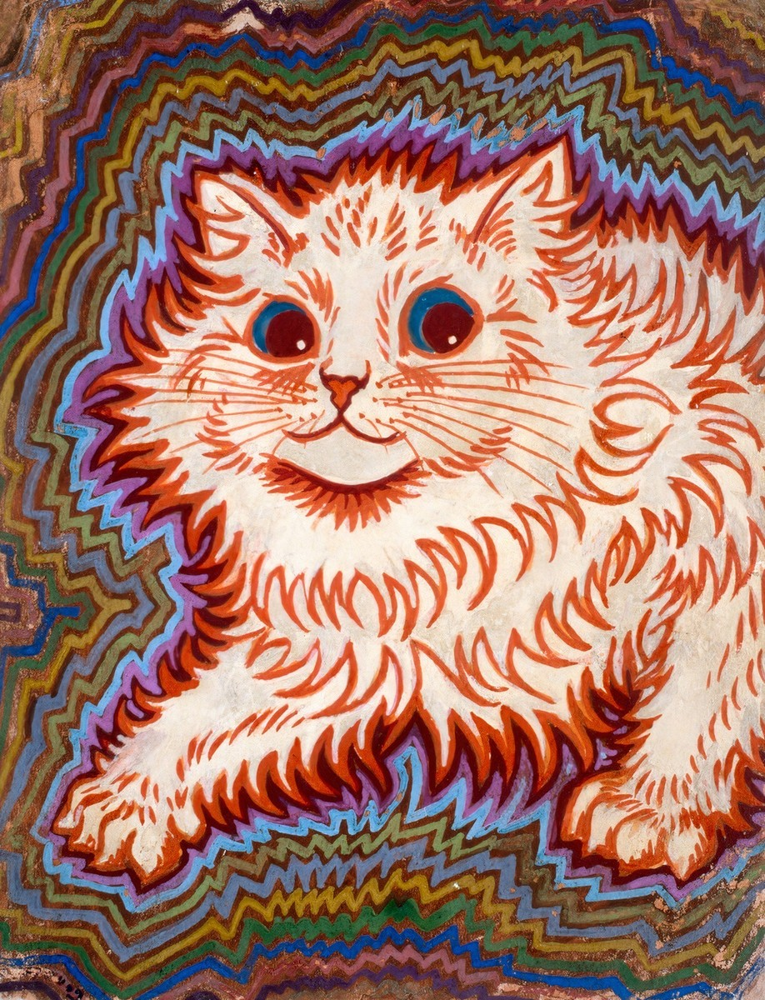

lunarcit0’s Game Room
← All games
Pool & Angles
Angles, strategy, and a game of 8 ball.
THE POOL ROOM
8 ball · you vs opponent
YOU
Open table
Your turn
OPPONENT
Open table
Place cue ball
Pull ↓
Release to shoot
85%